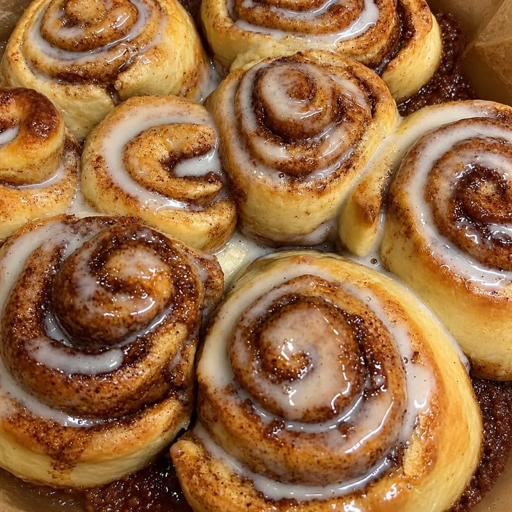

Cinnamon rolls recipe !!!

I love cinnamon rolls so I want to share a recipe to let anyone try it so enjoy it
ingredient:
dough:
- 2 cups all-purpose flour
- 2 tablespoons granulated sugar
- 2 teaspoons baking powder
- 1 teaspoon salt
- 3 tablespoons butter (softened)
- 2/3 cup of milk
filling:
- 1/4 cup of white sugar (granulated)
- 1/4 cup of brown sugar
- 2 teaspoons ground cinnamon
cream cheese icing:
- cream cheese
- 1 cup powdered sugar
- 1/2 teaspoon vanilla extract
Instructions:
- Mix Dry Ingredients: In a large bowl, whisk together the flour, sugar, baking powder, and salt
- Add Butter and Milk: Cut or rub the softened butter into the flour mixture until crumbly. Pour in the milk and stir gently with a fork until a soft dough forms
- Roll Out the Dough: Turn the dough onto a lightly floured surface and roll it out into a flat rectangle
- Add the Filling: In a small bowl, mix the white sugar, brown sugar, and cinnamon. Sprinkle this mixture evenly across the rolled-out dough
- Roll and Slice: Roll the dough tightly into a log, then slice it into 9 equal pieces using a sharp knife. Place them cut-side up in your prepared pan
- Bake: Bake for 20 to 25 minutes until the tops are puffed and lightly golden
- Make the Icing: While the rolls bake, beat the softened cream cheese, butter, powdered sugar, and vanilla extract together until smooth
- Frost and Serve: Spread the icing over the warm cinnamon rolls right away
finnally enjoy your Cinnamon rolls :)